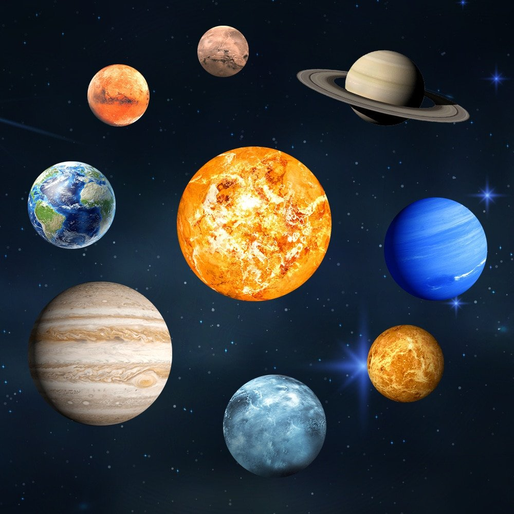
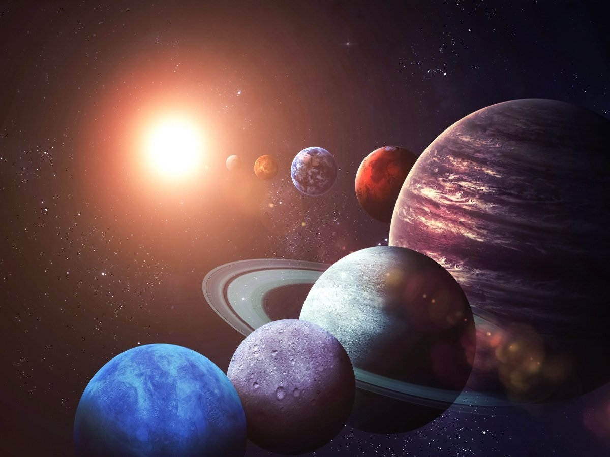

Что такое космос? Ещё в далёкие времена древние греки называли Мир (или Вселенную) Космосом, что в буквальном переводе означает «порядок». Космос - это единственная в своем роде природная лаборатория, дающая человеку возможность исследовать ряд вопросов, касающихся мироустройства, познать законы окружающего мира.
«Современное понятие космос включает всё пространство Вселенной, в том числе и Землю, околоземное и межпланетное пространство».
Космос - эквивалент понятия Вселенная.
Каковы задачи исследования космоса? Расширение границ познания об окружающем мире, практическое использование резервов космоса.
Вселенная - совокупность всего, что существует физически.
Ближний космос - исследуемый человеком.
Дальний космос - мир звёзд и галактик.
Космонавтика - теория и практика полётов в космос.
«Можно сказать, что термин космонавтика более правильно отражает суть дела, нежели термин астронавтика, принятый в США и являющийся производным от греческого слова астра – звезда».
Иногда под космосом понимали только планетную систему, окружающую Солнце. В современном словоупотреблении в связи с этим остался термин "космогония", которым обычно обозначают науку о происхождении Солнечной системы, а не всей Вселенной в целом. Термин "космонативка" ввел Ари Абрамович Штернфельд

Чаще под космосом понимают Вселенную, рассматриваемую как нечто единое, подчиняющееся общим законам. Отсюда происходит название космологии - науки, пытающейся найти законы строения и развития Вселенной как целого. Т. о., в названиях "космогония" и "космология" космос понимается в разном смысле.
Перейдём теперь к Солнечной системе. Здесь находятся ближайшие цели космических полётов - Луна и планеты. Пространство между планетами заполнено плазмой очень малой плотности, которую несёт солнечный ветер. Характер взаимодействия плазмы солнечного ветра с планетами зависит от того, имеют или нет планеты магнитное поле. Магнитные поля Юпитера и Сатурна значительно сильнее земного поля, поэтому магнитосферы этих планет-гигантов значительно протяжённее земной магнитосферы. Наоборот, магнитное поле Марса настолько слабо (в сотни раз слабее земного), что с трудом сдерживает налетающий поток солнечного ветра на самых ближних подступах к поверхности планеты. Примером немагнитной планеты является Венера, полностью лишённая магнитосферы. Однако взаимодействие сверхзвукового потока плазмы солнечного ветра с верхней атмосферой Венеры и в этом случае приводит к образованию ударной волны.

Большим разнообразием отличается семейство естественных спутников планет-гигантов. Один из спутников Юпитера, Ио, является самым активным в вулканическом отношении телом Солнечной системы. Титан, самый крупный из спутников Сатурна, обладает достаточно плотной атмосферой, едва ли не сравнимой с земной. Весьма необычным являются и взаимодействие таких спутников с окружающей их плазмой магнитосфер материнских планет. Кольца Сатурна, состоящие из каменных и ледяных глыб разных размеров, вплоть до мельчайших пылинок, можно рассматривать как гигантский конгломерат миниатюрных естественных спутников.
По очень вытянутым орбитам вокруг Солнца движутся кометы. Ядра комет состоят из отдельных камней и пылевых частиц, вмороженных в глыбу льда. Лёд этот не совсем обычный, в нём кроме воды содержатся аммиак и метан. Химический состав кометного льда напоминает состав самой большой планеты - Юпитера. Когда комета приближается к Солнцу, лёд частично испаряется, образуя гигантский газовый хвост кометы. Кометные хвосты обращены в сторону от Солнца, т. к. постоянно испытывают воздействие давления излучения и солнечного ветра.
Наше Солнце - лишь одна из множества звёзд, образующих гигантскую звёздную систему - Галактику. А эта система в свою очередь - лишь одна из множества других галактик. Астрономы привыкли относить слово "Галактика" как имя собственное к нашей звёздной системе, а то же слово как нарицательное - ко всем таким системам вообще. Наша Галактика содержит 150- 200 млрд. звёзд. Они располагаются так, что Галактика имеет вид плоского диска, в середину которого как бы вставлен шар диаметром меньшим, чем у диска. Солнце расположено на периферии диска, практически в его плоскости симметрии. Поэтому, когда мы смотрим на небо в плоскости диска, то видим на ночном небосводе светящуюся полосу - Млечный Путь, состоящий из звёзд, принадлежащих диску. Само название "Галактика" происходит от греческого слова galaktikos - млечный, молочный и означает систему Млечного Пути.

Планеты земной группы — четыре планеты Солнечной системы: Меркурий, Венера, Земля и Марс. Они расположены во внутренней области Солнечной системы, в отличие от планет-гигантов, расположенных во внешней области. Согласно ряду космогонических теорий, в значительной части внесолнечных планетных систем экзопланеты тоже делятся на твердотельные планеты во внутренних областях и газовые планеты — во внешних.
Планеты-гиганты — четыре планеты Солнечной системы (Юпитер, Сатурн, Уран и Нептун) расположенные за пределами пояса астероидов. Эти планеты, имеющие ряд сходных физических характеристик, также называют внешними планетами.

1. Солнце составляет 99,8 процентов массы Солнечной системы. А именно 1 989 100 000 000 000 000 000 000 000 000 кг. Все остальные планеты, спутники, астероиды и другие материи, включая всех людей на Земле вмещаются в оставшиеся 0,2 процента.
2. Газовое облако в созвездии Орел содержит достаточно алкоголя, чтобы создать 200 септиллионов литров пива. Количество этанола было измерено в 1995 году, и ученые обнаружили 30 других химических веществ в облаке, но алкоголь был основным.
3. Мы обнаружили больше тысячи планет за пределами Солнечной системы за последние 20 лет. На данный момент подтверждено существование 1822 планет.
4. Все планеты Солнечной системы могли бы уместиться между Землей и Луной. Расстояние между Землей и Луной (384 440 км) – [Диаметр Меркурия (4879 км) + диаметр Венеры (12 104 км) + диаметр Марса (6771 км) + диаметр Юпитера (138 350 км) + диаметр Сатурна (114 630 км) + диаметр Урана (50 532 км) + диаметр Нептуна (49 105 км)] = 8069 км
5. Фотону требуется в среднем 170 000 лет, чтобы пройти от ядра Солнца к поверхности. Но всего лишь 8 минут, чтобы достичь Земли.
6. Мы не сможем услышать никаких звуков в космосе.
Аппарат Вояджер попытался записать звук межзвездного пространства с помощью инструмента плазменной волны, но так как газ в межзвездном пространстве менее плотный, мы сами не сможем услышать этот звук.
Если бы звуковая волна проходила сквозь большое облако газа в космосе, всего несколько атомов в секунду достигли барабанной перепонки, и мы бы не услышали звук, так как наша барабанная перепонка не достаточно чувствительная.
7. Кольца Сатурна время от времени исчезают. Каждые 14-15 лет кольца Сатурна поворачиваются ребром к Земле. Они настолько узкие по сравнению с тем насколько большим является Сатурн, что кажется, что они исчезают.
8. У Сатурна есть дополнительное огромное кольцо, открытое только в 2009 году. Кольцо начинается примерно в 6 миллионах километрах от Сатурна, и его протяженность составляет 12 миллионов км, куда вместилось бы 300 Сатурнов. Спутник Сатурна Феба вращается внутри кольца и некоторые астрономы считают, что именно он является источником появления кольца.
9. На северном полюсе Сатурна есть шестиугольное облако. Шестиугольный вихрь простирается почти на 30 000 км в поперечнике.
10. Мы все сделаны из звездной пыли.
После Большого Взрыва, крошечные частицы соединились в водород и гелий. Затем в очень плотных и горячих центрах звёзд они объединились, создав элементы, включая железо.
Так как люди и другие животные, и большая часть материи содержит эти элементы, можно сказать, что мы состоим из звездной пыли.
Интерактивные задания